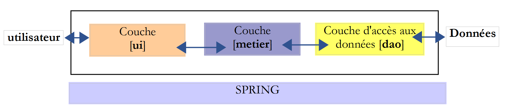
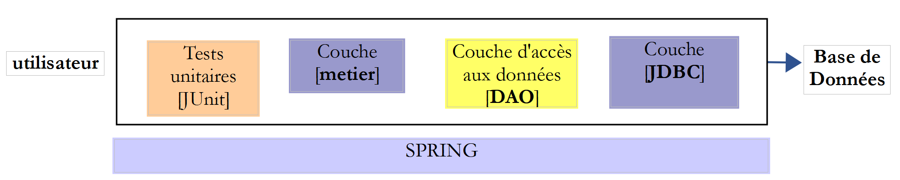

1. مقدمة
1.1. Contexte
يمكن العثور على PDF الخاص بالوثيقة |HERE|.
الأمثلة الواردة في المستند متاحة |HERE|.
هذا المستند هو في الوقت نفسه دورة دراسية و TD (عمل موجه) جامعي. وهو مخصص للمبتدئين. ويستخدم المصادر التالية:
المراجع:
سنشير إلى هذه المراجع على التوالي بـ [ref1] و [ref2]. المصدر [ref1] قديم (2002) ولكنه كافٍ لهذا المستند حيث لا يُستخدم إلا لعرضه لقواعد لغة Java وأعمالها الأساسية. يتم عرض الباقي اللازم لتنفيذ TD في هذا المستند في فصول بعنوان [Cours]. هذه الفصول مأخوذة مباشرة من [ref2] (2015) وقد تم تبسيطها في بعض الأحيان.
الهدف من هذا المستند هو تدريس لغة Java من منظور مهني. ولهذا السبب، نعتمد بشكل كبير على إطار عمل Spring [http://spring.io/] المستخدم على نطاق واسع في تطوير JEE (Java Enterprise Edition). من المنطقي أن يتبع هذا المقرر مقررًا في JEE. وهذا هو الحال في Istia (جامعة أنجيه). JEE هو المصدر الرئيسي للوظائف حاليًا (نوفمبر 2015) للمطورين الشباب الحاصلين على درجة البكالوريوس + 5. هناك العديد من التقنيات الأخرى غير Spring في عالم JEE. تتميز Spring بكونها سهلة الفهم، وبالأهم من ذلك أنها توفر ممارسات برمجة جيدة قابلة لإعادة الاستخدام خارج نظام Spring. وهذا ما يفسر اختيارها هنا.
يُستخدم هذا TD منذ أكثر من 10 سنوات وقد تطور مع التكنولوجيات. ويليه (في IstiA) TD JEE [Introduction à Java EE]. يعود تاريخ الإصدار الأخير TD إلى عام 2012 (نحن الآن في عام 2015) ويستحق التحديث. وهو يعرض الأسلوب التقليدي JEE من خلال إطار عمل الويب JSF2 (Java Server Faces) و EJB3 (Enterprise Java Bean). وقد سمح هذان الإطاران، عند استخدامهما معًا، للعديد من الطلاب بالحصول على تدريبات في مجال JEE في ESN (شركات الخدمات الرقمية) والتوظيف فيها على الفور.
لن تجد في هذا المستند عرضًا رسميًا لجميع جوانب Java. على مر السنين، تطور سلوك المطورين المبتدئين في مواجهة المشاكل بشكل كبير. والآن، يستخدمون الإنترنت بشكل شبه منهجي للعثور على أجزاء من الكود التي تشكل برنامجًا عند تجميعها. وإذا تم تزويدهم بدورة تدريبية، فإنهم لا يستخدمونها كثيرًا ويفضلون العودة إلى الإنترنت. ورغم أنني كنت متشككًا في البداية في هذه الطريقة في العمل، إلا أنني فوجئت بالنتائج التي تم الحصول عليها. وهكذا، تمكن الطلاب الضعفاء من إنتاج برامج تعمل، في حين أنهم ربما لم يكونوا ليتمكنوا من ذلك بدون مساعدة الإنترنت. وأنا أعتمد الآن على هذه الطريقة في العمل.
لا تعطي أجزاء الكود نظرة شاملة على بنية الحل، ومن أهداف هذا المستند تقديم هذه النظرة. يقوم الطلاب بعمل هذا TD مثل TP، بشكل مستقل. لا توجد محاضرات. هناك جدول زمني يحدد التقدم المتوقع منهم على مدار الجلسات. يمكنهم أن يتأخروا أو يسبقوا هذا الجدول. يتم التحقق من تقدمهم من خلال عدد من عمليات التحقق التي يجب عليهم تقديمها إلى المعلم. ويكون المعلم حاضراً لتقديم التفسيرات لهم عند الطلب وللتحقق من عملهم. يعمل كل منهم وفقاً لسرعته الخاصة. في نهاية الـ 36 ساعة المخصصة لهذا TD، سيكون البعض قد أنجز 50٪ من عمليات التحقق أكثر من الآخرين، لكن الهدف هو أن يكون كل واحد قد فهم ما أنجزه بمفرده. يمكن إتمام هذا البرنامج التدريبي (TD) دون مرافقة مدرس. ولهذا السبب، فهو متاح على منصة [https://stahe.github.io].
لن يناسب هذا المستند أولئك الذين يبحثون عن دورة أكاديمية حول Java، أي شيء يشرح Java بطريقة تدريجية ومنظمة ويتم فيه شرح وتبرير كل تفصيل من تفاصيل الصياغة. بل هو نهج تجريبي يُقترح هنا. من المحتمل ألا يفهم الطالب كل ما يُعرض عليه في هذا المستند، لكنه سيتمكن على الأرجح من إعادة استخدام محتواه بشكل سليم، وسيأتي فهم التفاصيل مع الخبرة.
كما أن هذا المستند ليس دورة في الخوارزميات. خوارزمية TD بسيطة ويمكن لأي مبتدئ يتابع دروسه الأولى في الخوارزميات حلها. يركز هذا المستند على بيئة التطوير الاحترافية في Java بمكتباتها أو أطر عملها العديدة وعلى بنية الكود. يعاني معظم الطلاب الذين أراهم من نقاط ضعف في علم الخوارزميات، وهو ما يؤكده بعد ذلك المشرفون على التدريب. لذا، نعم، إتقان الخوارزميات مهم، لكنه ليس موضوع هذا المقرر الدراسي.
أخيرًا، لا يعرض هذا المستند (ديسمبر 2015) أحدث المستجدات في Java، ولا سيما التدفقات ووظائف lambda. ومع ذلك، نستخدم فيه بعض عناصر الإصدار الأخير JDK، وهو JDK 1.8، ويجب ترجمة الأكواد التالية باستخدام هذا الإصدار JDK.
1.2. Contenu
يقدم الفصل الثاني موضوع TD، وهو حساب نتائج الانتخابات. المشكلة بسيطة. يطلب الفصل الثاني تنفيذ الحل باستخدام لغتي C# وJava اللتين تتشابهان إلى حد كبير. يتم التنفيذ بدون فئات. الهدف هو عرض صيغة Java، وأوامرها الأساسية، وبيئة التطوير المتكاملة (IDE) Eclipse التي تُستخدم لإنشاء مشاريع Java.
يطلب الفصل 3 تنفيذ حل TD بلغة Java باستخدام الفئات. الهدف هو عرض مفاهيم الفئات، والوراثة، والواجهات، والفئات العامة. يتم تقديم مفهوم الاختبار الوحدوي JUnit.
يقدم الفصل 4 المفاهيم التي تستند إليها الفصول التالية:
- البنى الطبقية؛
- البرمجة عبر الواجهات؛
- استخدام Spring لتنفيذ المفهومين السابقين؛

يقدم الفصل 5 إطار عمل Spring من خلال أربعة مشاريع.
يقدم الفصل 6 API JDBC وهي واجهة للوصول إلى قواعد البيانات.
الفصل 7 ينفذ طبقة [DAO] (Data Access Object) من TD باستخدام API JDBC و Spring.

الفصل 8 ينفذ الطبقة [métier] من TD:

الفصل 9 ينفذ الطبقة [ui] من TD باستخدام تطبيق وحدة التحكم:

الفصل 10 ينفذ الطبقة [ui] من TD باستخدام تطبيق رسومي يستخدم مكتبة مكونات Swing:


يقدم الفصل 11 إدارة قواعد البيانات باستخدام إطار العمل [Spring Data]، وهو فرع من نظام Spring. ويقدم مواصفات JPA (Java Persistence API) التي تسمح لطبقة [DAO] بمعالجة الكائنات بدلاً من معالجة SQL (لغة الاستعلام الهيكلية). تتطور بنية الطبقات على النحو التالي:

يطبق الفصل 12 ما ورد في الفصل 11 من خلال تنفيذ الوصول إلى قاعدة بيانات TD باستخدام [Spring Data].
يوضح الفصل 13 كيفية عرض قاعدة بيانات على الويب باستخدام [Spring MVC]، وهو فرع آخر من نظام Spring. تتطور البنية إلى بنية عميل/خادم:

يحول الفصلان 14 و 15 تطبيق TD إلى تطبيق عميل/خادم:

يوضح الفصل 16 كيفية تأمين الوصول إلى تطبيق ويب باستخدام [Spring Security]، وهو فرع آخر من نظام Spring.

يستعرض الفصل 17 TD ويؤمن خدمة الويب الخاصة بالانتخابات.
يتناول الفصل 18 مشكلة الطلبات عبر النطاقات:
 |
- في [1]، يقدم تطبيق ويب صفحات HTML / Javascript؛
- في [2]، يقوم المتصفح بتنفيذ جافا سكريبت المضمن في صفحات HTML لاستعلام خدمة الويب الآمنة [3-4]؛
أو D1=http://machine1:port1 نطاق الخادم [1] و D4=http://machine4:port4 نطاق الخادم [4]. إذا لم تكن الخوادم [1] و [4] في نفس المجال [D1!=D4]، فإن الطلبات من [3] إلى [4] تسمى طلبات عبر المجالات. وبسبب قيود الأمان التي تطبقها المتصفحات، قد يكون تنفيذها صعبًا. سنبحث في حل لهذه المشكلة.
يستخدم الفصل 19 الطلبات عبر المجالات مع تطبيق الانتخابات.
1.3. الأدوات المستخدمة
تم اختبار الأمثلة التالية في البيئة التالية:
- جهاز يعمل بنظام Windows 10 Pro 64 بت؛
- JDK 1.8 (الفقرة 22.1)؛
- IDE Spring Tool Suite 3.6.3 (الفقرة 1)؛
- Netbeans 8.1 (الفقرة 22.4)؛
- متصفح Chrome (لم يتم استخدام متصفحات أخرى)؛
- ملحق Chrome [Advanced Rest Client] (الفقرة 1)؛
- WampServer الذي يجلب SGBD و MySQL وأداة [PhpMyAdmin] لإدارته (الفقرة 22.7)؛
من المهم استخدام JDK 1.8. تستخدم بعض الأمثلة عناصر من هذا JDK. معظم الأمثلة عبارة عن مشاريع Maven يمكن فتحها باستخدام أي من IDE Eclipse [https://www.eclipse.org/]، IntellijIDEA Community Edition [https://www.jetbrains.com/idea/download/] و Netbeans [https://netbeans.org/]. وفيما يلي، تأتي لقطات الشاشة من IDE Spring Tool Suite، وهو أحد أشكال Eclipse.
1.4. الدعم
مشاريع Eclipse الواردة في هذا المستند متاحة على الموقع [https://tahe.developpez.com/tutoriels-cours/intro-java-spring/serge-tahe-introduction-au-langage-java-et-a-l-ecosysteme-spring/].
 |
لاستيراد مشاريع أحد الفصول، اتبع الخطوات التالية في Eclipse كما هو موضح في [1-8]:
 |
معظم المشاريع هي مشاريع Maven. إذا ظهرت أخطاء بعد التحميل، قم بتنفيذ [Alt-F5] واتبع الإجراء [9-10]. سيتم إعادة بناء مشاريع Maven المحددة.
 |